Overview
Expend on project 3-1, we add more complicated materials, environment lights, and depth of field to your ray tracer. It is very interesting to see different materials applied on the mesh with different lighting effects. Depth of field gives very cool images like using a camera.
Part 1: Mirror and Glass Materials
In part 1, reflection and refraction are implemented and can be visualized via two spheres in the box. Increasing the maximum ray depth increases the maximum number of times a ray can be reflected and refracted. You can see the difference in below images. Below images ran with sample rate of 64 and 4 samples per light. They are a bit noisy due to the low sample rate.
|
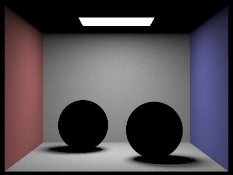
m = 0, s = 64, l = 4
When maximum ray depth = 0, no ray can be reflected or refracted, so the mirror and glass material spheres look dark.
|
|
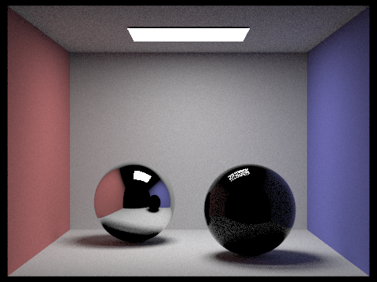
m = 1, s = 64, l = 4
When maximum ray depth = 1, ray get reflected once on the mirror sphere, so the glass made sphere on the right look darker. The small sphere reflected on the mirror sphere looks dark.
|
|
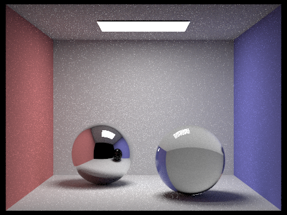
m = 2, s = 64, l = 4
With secondary refraction and reflection, the glass made sphere looks clear now because the ray get reflected from the mirror sphere onto the glass made sphere. The ray also get reflected from the sphere on the right to the environment. So you can the image overall looks brigher compared to the previous one.
|
|
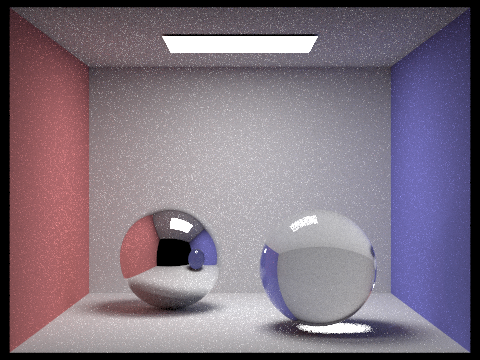
Increase depth by one, the major difference is that the sphere on the right get reflected on the mirror sphere on the left. So the small sphere appear on the mirror sphere is not dark anymore but blue color.
|
|
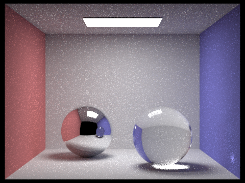
m = 4, s = 64, l = 4
At maximum ray depth of 4, the major difference is that the ray from the right sphere get reflected onto the wall on the far right. So there is a small bright spot light on the wall.
|
|
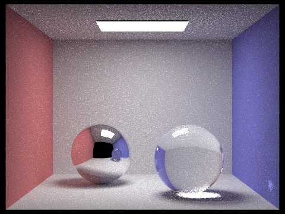
m = 100, s = 64, l = 4
Overall, increasing the maximum ray depth gives a much brighter image.
|
Part 2: Microfacet Material
Different alpha value
Changing alpha value changes the roughness of the mesh material. It describes how the microfacet surface reflects lights in the randomness of the reflection direction. As seen below, the lower the alpha value, the smoother the surface is. It looks more like a mirror. While a rough surface will scatter the reflection in multiple directions.
|
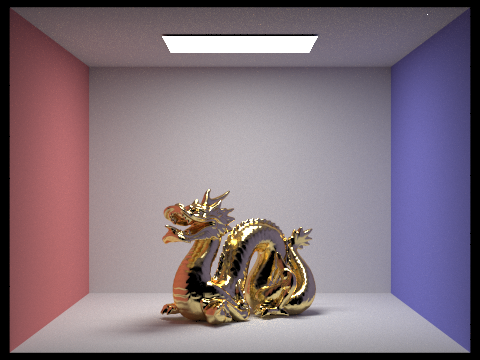
alpha = 0.05
The much lower alpha value gives a smoother surface and more mirror like surface.
|
cosine hemisphere sampling and importance sampling
|
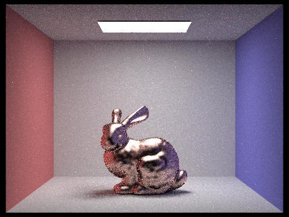
Cosine hemisphere sampling
Using cosine hemisphere sampling gives a more noisier effect compared to importance sampling. Because importance sampling distributes samples where light is expected to have a greater influence. Like a perfect mirror only needs a single direction according to the reflection rule. For cosine hemisphere sampling, it results in some samples at flat angles that is not supposed to have a lower influence. So the samples is a bit more spread out in cosine sampling.
|
Silver material
|
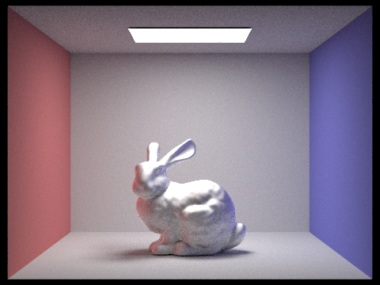
Silver bunny
This silver like material is based on wavelengths of 614nm red, 549 nm green, 466nm blue. Eta are 0.059193, 0.059881, 0.047366 respectively. k are 4.1283, 3.5892, 2.8132 respectively.
|
Part 3: Environment Light
probability debug
 Probability debug
Probability debug
|
Uniform and importance sampling
Uniform sampling is the naive way to distribute samples equally and probe all directions equally for incoming light. Every regions has the same weight. To solve this problem, importance sampling is introduced to increase the density of sample points in the regions that we are interested in, for example we want to concentrate more light source in the direction toward the bight light sources. The general idea is that each pixel is assigned a probability (non-uniform distribution) in the environment map based on the total flux passing through the solid angle it represents. It also improves the overall efficiency.
|
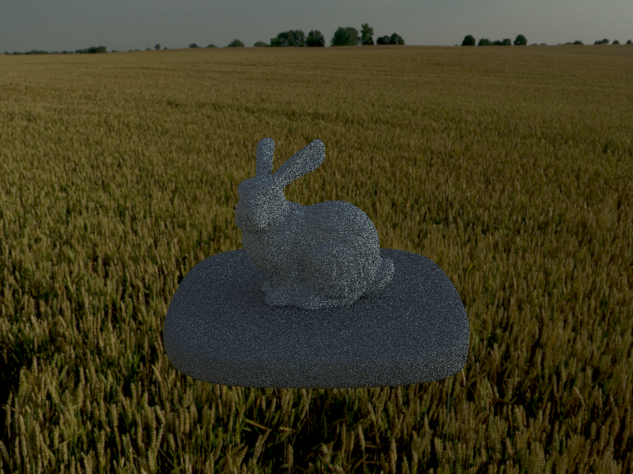
bunny_unlit uniform
For buny_unlit, there is not much visible difference between two schemes.
|
|
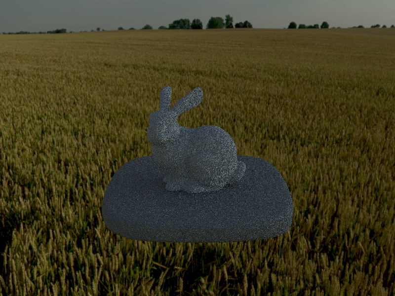
bunny_unlit importance
|
|
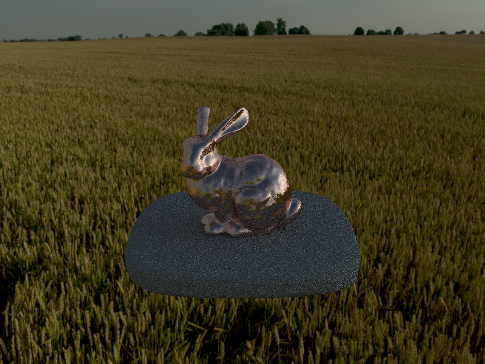
bunny_microfacet_cu uniform
For bunny with microfacet of cu, it is slightly nosier on the sample points around the outlines or say edges of the bunny, while importance sampling focuses light sources on the bunny and gives a smoother surface.
|
|
bunny_microfacet_cu importance
|
Part 4: Depth of Field
Both aperture and focal distance controls the depth of field.
As you can see in below images, the smaller the diameter of the aperture, the smaller the f/stop, which is the larger the number, the more depth of field it is. From the first image with highest aperture value, a comparatively narrow depth of field. There is little focus on either side of the focus points. When the aperture value is decreasing, more subject are taken into focus on either side of the focus point. When aperture reaches 0, it is just same as pinhole camera, the whole image is focused.
Different aperture effect
|
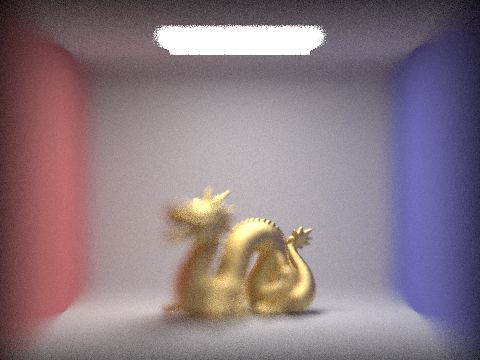
Aperture = 0.6, focal distance = 5
|
|
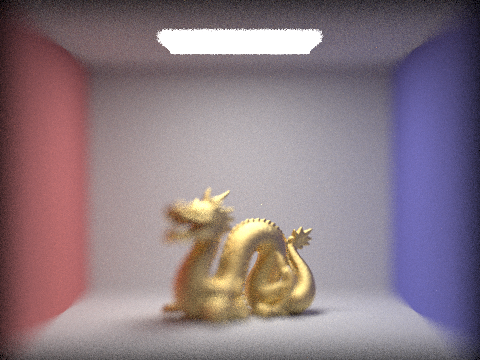
Aperture = 0.4, focal distance = 5
You can see the big difference on the depth of field in focus. The head of the dragon in the below image is more clear than the one above.
|
|
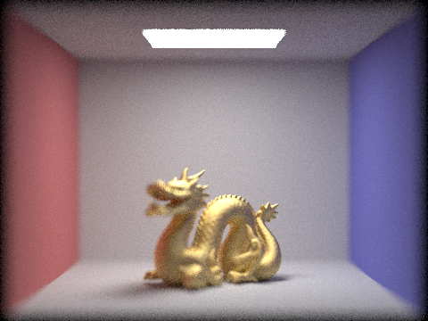
Aperture = 0.2, focal distance = 5
|
|
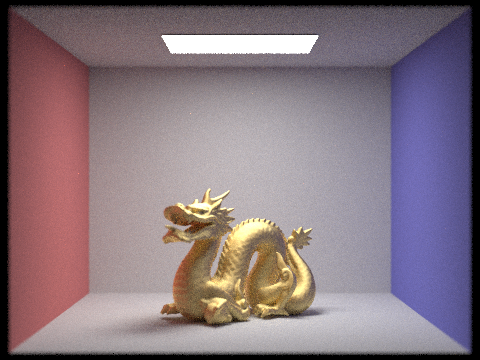
Aperture = 0.05, focal distance = 5
|
Different focal distance effect
Depth of field refers to distance from the camera that are in focus. Choosing different focal distance can isolate some area with the object that we want to focus on. The wider focal distance helps to include the surrounding scene. As you can see in below images, the lower the focal distance, the more blurry the background is. The higher the focal distance, the more clear on the background. Since I chose a comparatively high aperture, so you can see a more narror depth of focus, which makes it easy to see the differnce of the area being focused and the area without focused.
|
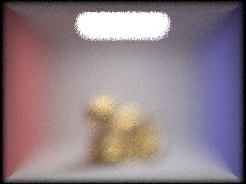
Aperture = 0.6, focal distance = 4
Small focal distance, the whole scene is blurry.
|
|
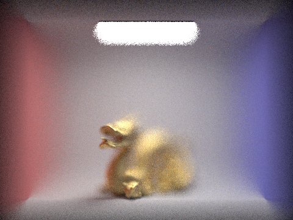
Aperture = 0.6, focal distance = 4.5
Since the head of the dragon comes before it's tail, so increase focal distance will first focus on the head of the dragon. You can see a bit clear on the dragon's mouth.
|
|
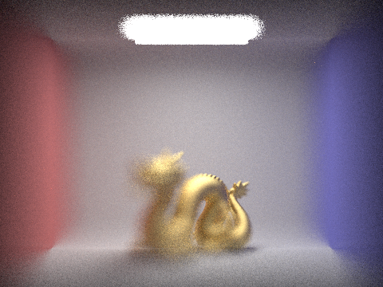
Aperture = 0.6, focal distance = 5
Then it comes to focus on the dragon's tail.
|
|
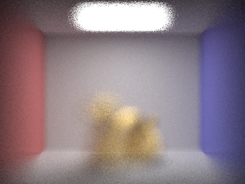
Aperture = 0.6, focal distance = 5.5
Finally the box in the back gets to focused. You can see a bit clear of the edges of the box.
|